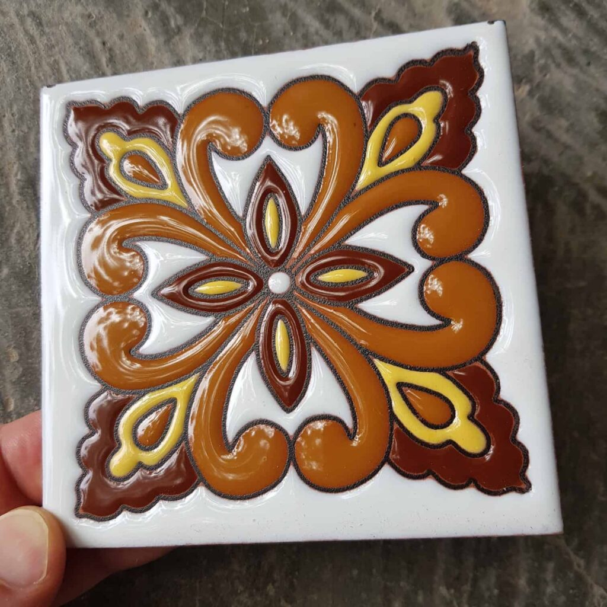
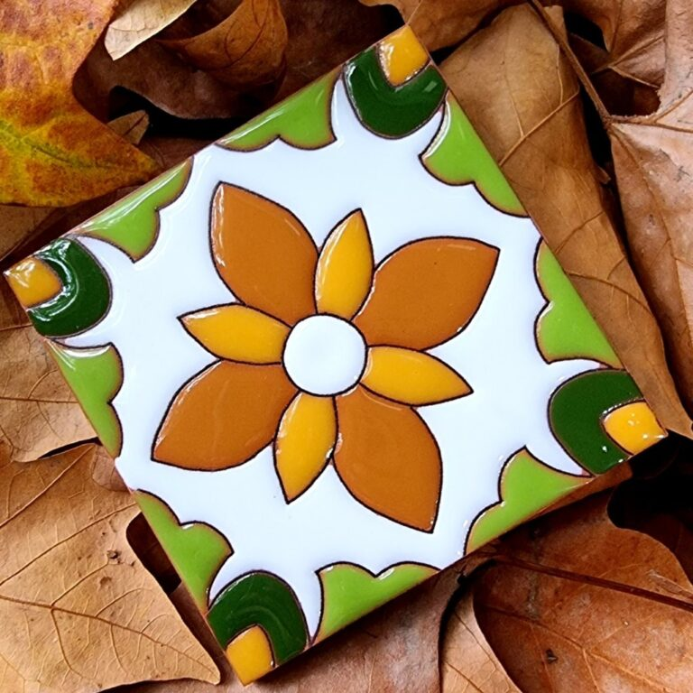
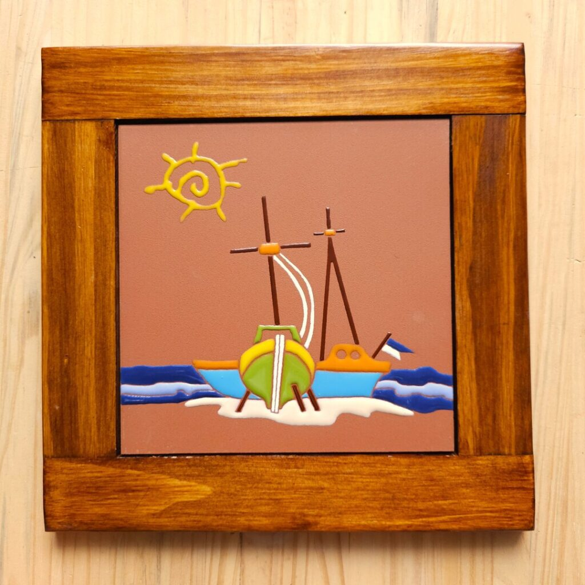
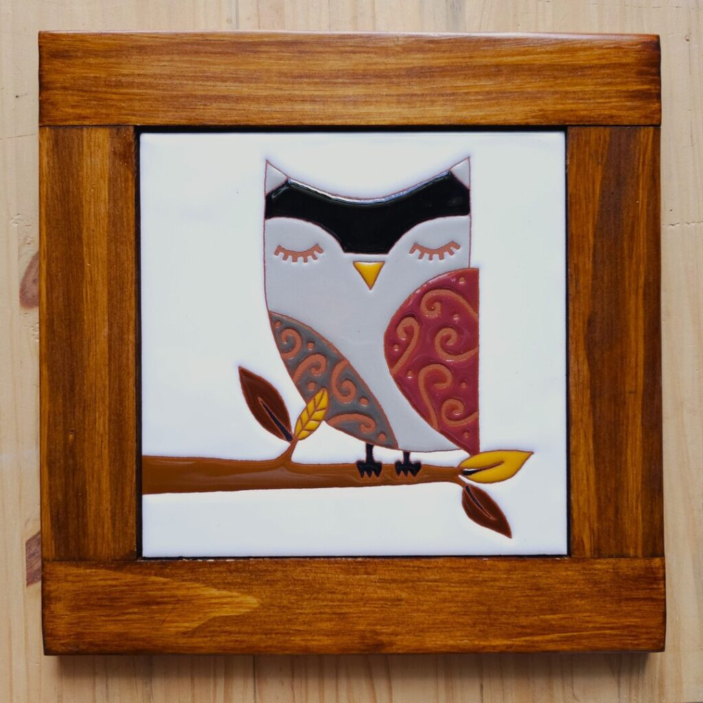
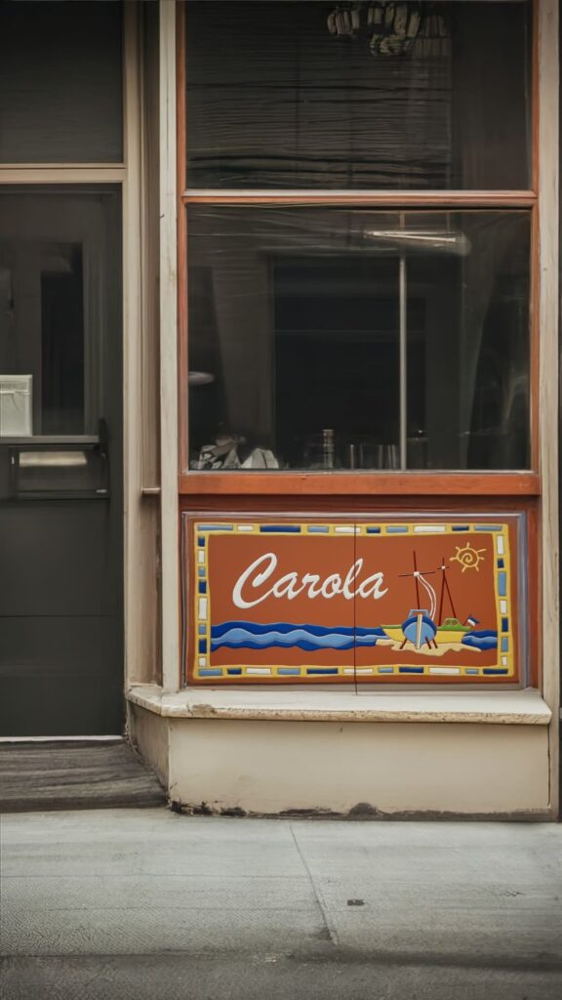
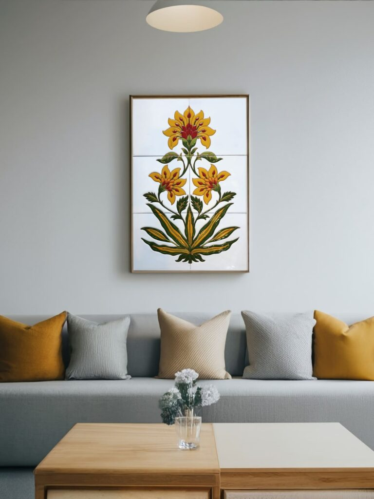

Diseño propio
Cada pieza nace de un dibujo original o de un proyecto decorativo, y se adapta a la medida y la paleta del espacio donde va a vivir.
Piezas únicas hechas a mano, placas decorativas y proyectos a medida elaborados con técnicas tradicionales de cuerda seca.




Azulejos de 10 x 10 cm, cuadros cerámicos y piezas de gran formato, todos decorados a mano pieza por pieza.
Un procedimiento tradicional en el que cada color queda separado por una línea de manganeso trazada a mano, sin que los esmaltes se mezclen durante la cocción.
Cada pieza nace de un dibujo original o de un proyecto decorativo, y se adapta a la medida y la paleta del espacio donde va a vivir.
Engobes, esmaltes y óxidos aplicados con pincel, uno a uno. Las pequeñas variaciones entre azulejos son parte del resultado.
El trabajo se realiza sobre cerámica de grado PEI 4, apta para uso en piso además de pared, cocinas y baños.

Diseñamos y elaboramos piezas cerámicas exclusivas para arquitectura, cocinas, baños y espacios singulares. Trabajamos a partir de tu idea o proyecto decorativo.
Aprende las técnicas tradicionales de modelado, engobes y pintura en cerámica en nuestro taller en Montevideo. Grupos reducidos y atención personalizada.

Soy ceramista y me dediqué toda mi vida a investigar, aprender y enseñar a personas a hacer cerámica.
Mi enfoque en cerámica se centra principalmente en la técnica de la «cuerda seca», en la que decoro azulejos a mano con una obsesión por los detalles. No obstante, mi verdadera pasión reside en la creación de piezas únicas y la búsqueda constante de la perfección. Mi naturaleza perfeccionista me impulsa a esforzarme continuamente por alcanzar la excelencia en cada obra.
La curiosidad y el deseo de aprender de manera autodidacta son rasgos que me definen. Encuentro inspiración en cada ceramista y artista que cruzo en mi camino, así como en objetos que me seducen por su juego de colores, texturas y formas.